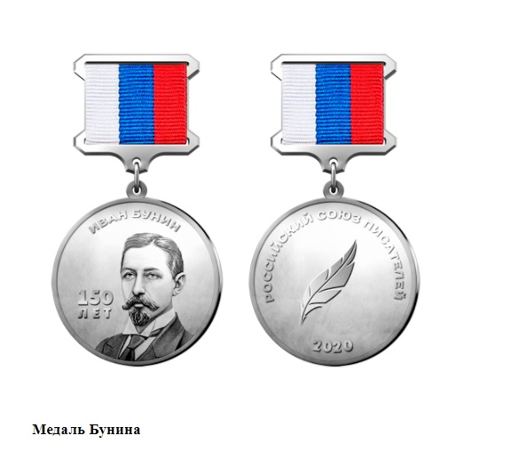

Основным моим хобби являются компьютерные игры. Я не игрок в RPG игры, игры на прохождения, я - игрок в соревновательные игры. Моей первой соревновательной игрой стала CS 1.6. С ней меня познакомил отец, когда мне было 7 лет. В более взрослов возрасте я перешёл на CS:Source, играл в PUBG, dota 2, но любимой игрой для меня является CS:GO. В CS:GO я уже играл, когда стал старше. Мы с моей командой часто играли online турниры, и иногда даже их выигрывали. Одним из самых значимых для меня моментов был в 2021 году. Тогда я со своей командой прошёл в 1/16 турнира COLIZEUM: ROG с призовым фондом 1.800.000р. Нам не хватило всего одной победы до play-off, который проходил на настоящей арене в Москве.
В 5 классе я открыл в себе талант к написанию стихотворных произведений. Позже стал публиковать свои стихотворения под псевдонимом "Григорий Кади". В 2020 году был номинирован на премию "Поэт Года 2020" и награждён медалью Бунина.
